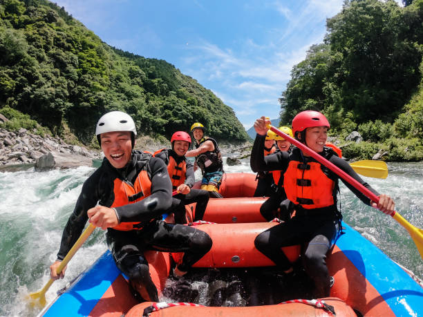

Nossa missão é conectar pessoas à natureza por meio de experiências seguras, emocionantes e inesquecíveis. Valorizamos a aventura com responsabilidade, trabalho em equipe e respeito ao rio. Venha viver a energia das corredeiras com guias experientes e atendimento acolhedor!